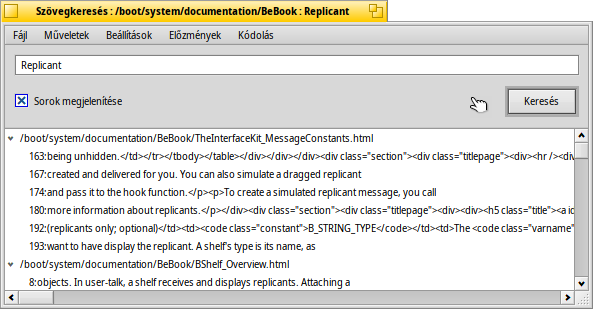

Magyar
Magyar Français
Français Deutsch
Deutsch Italiano
Italiano Русский
Русский Español
Español Svenska
Svenska 日本語
日本語 Українська
Українська 中文 ［中文］
中文 ［中文］ Português
Português Suomi
Suomi Slovenčina
Slovenčina Português (Brazil)
Português (Brazil) English
English Szövegkeresés (TextSearch)
Szövegkeresés (TextSearch)
| Asztalsáv: | Nincs. Nyomkövető kiegészítőként indítható. | |
| Útvonal: | /boot/system/apps/TextSearch | |
| Beállítások: | ~/config/settings/TextSearch |
Ez a program szöveges fájlokban való keresgélésre szolgál. Elsődlegesen a Nyomkövető kiegészítők listából indítható a kiválasztott fájlon vagy mappán, ahol keresni szeretnénk.
Szöveget kereshetsz a beviteli mezőbe írva, és a RETURN-t lenyomja, vagy ha a gombra kattintasz. Ha a be van jelölve, akkor a találatok automatikusan kibontásra kerülnek a listában.
Néhány szó az egyébként egyértelmű menüről:
Fájl menü | ||||
| ALT N | Új ablakot nyit meg, ahol új keresést indíthatunk ugyan abban a fájlba vagy mappában. | |||
| ALT F | Új fájlok illetve mappák megadása ahol keresni szeretnénk. | |||
Műveletek menü | ||||
| ALT T | Az összes bejegyzés elávolítása a listából ami nincs kijelölve. | |||
| ALT O | A kijelölt fájl megnyitása a hozzá társított programmal (ugyan úgy, mint dupla-kattintásskor). Ha egy szövegszerkesztő (például a Pe) lehetőséget nyújt rá, akkor megnyitáskor a program automatikusan arra a sorra ugrik a fájlban, ahol megtalálta a keresett szöveget. | |||
| ALT K | A kijelölt fájl megnyitása a Nyomkövetőben. | |||
| ALT B | A jelenleg kijelölt szöveget a vágólapra másolja. | |||
Beállítások menü | ||||
| Ez akkor lehet hasznos, ha "unix-szerű" környezetben dolgozunk, ahol gyakran a fontos fájlok egy rejtett mappában (.mappa/) találhatóak. A forráskód-kezelő rendszerek, mint például az SVN és CVS, és a Haiku esetén is találkozhatunk ilyennel. | ||||
| A program egy másik parancssori programot használ, a grep-et. Ehhez a speciális karaktereket, mint például '"*\$?! és a szóközt külön fogja jelölni a \ jellel. Ennek a kikapcsolása annyit tesz, hogy ezt kézzel kell megadni, de lehetőségünk van az általános kifejezések használatára is. | ||||
| Jelenleg a program csak a szöveges fájlokban való kereséskor hatékony. Ez az opció kikapcsolása esetén a program az összes típusú fájlban fog keresést végezni. | ||||
Előzmények menü | ||||
| Ez előzőleg használt keresési beállítások. | ||||
Kódolás menü | ||||
| Szükség esetén választhatunk különféle karakter-kódolások közt. | ||||